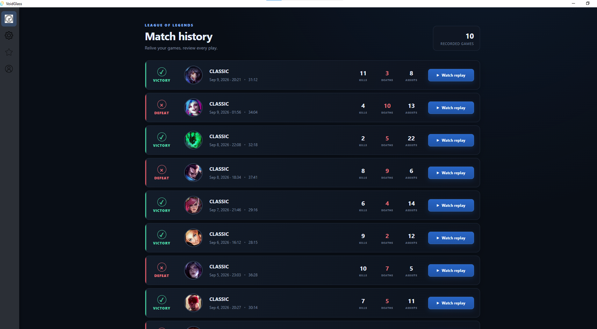

Product overview
VoidGlass
VoidGlass is an independent Windows application for League of Legends. It includes an in-game overlay, a match recorder, a desktop client and a local agent.
Download VoidGlass- Riot request ID
- 57c91887-1914-4f8b-8c01-228f99b81c07
Current data sources
Data used by the application
VoidGlass does not currently use a Riot API key. During a match, it reads the local Live Client Data endpoint. It also uses the League Client API to detect client and match state.
Data Dragon provides champion and item icons and other static game data. Local player configuration files are read only when needed to determine display mode, screen resolution and assigned ability keys.
The overlay is limited to information available to the player. It is not designed to reveal hidden game information.
In-game component
Overlay
The overlay currently contains three widgets. Each widget can be resized, moved or closed during a match and displays the VoidGlass logo.

Recording component
Recorder
The recorder is based on libobs. It uses graphics capture when available and provides a fallback capture method.
Hardware encoding is used when supported by the player’s GPU. Recording runs separately from the game and is designed to limit CPU and memory use.

User interface
Desktop client
The desktop client configures the overlay and recorder. It also lists recorded matches and opens them for playback.

Local component
Agent
The Java agent detects the League client state and the beginning and end of each match. It starts and coordinates the local components required by the configured features.
The agent remains accessible from the Windows system tray. Its menu opens the desktop client, provides access to configuration, shows its active state and allows the user to quit.
Requested Riot API use
Post-game analysis
Riot API access would be used to retrieve match history, ranked information, match details and timelines. This data would support post-game review by helping identify and contextualize relevant moments in a recorded match.
If a current or planned feature does not comply with Riot Games policies for third-party applications, it will be changed or removed.